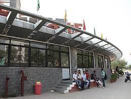

ADGITM at a Glance
Dr. Akhilesh Das Gupta Institute of Technology & Management, formerly known as Northern India Engineering College (NIEC), New Delhi was established by BBDES, LUCKNOW in the year 2003. ADGITM has an aesthetically designed campus spread over approximately 8.08 acres of lush green environment at Shastri Park. The Campus comprises of five interconnected blocks covering a built up area of approx. 23,636.67 square meters. ADGITM offers following Under Graduate and Post Graduate level full time Professional programs approved by AICTE and BCI in affiliation with Guru Gobind Singh Indraprastha University (GGSIPU), Delhi.
VISION AND MISSION OF COLLEGE

VISION
To produce globally competent and socially responsible technocrats and entrepreneurs who can develop innovative solutions to meet the challenges of 21st century.
MISSION
1. To provide value-based education through multi grade teaching methodologies and modern education facilities.
2. To sustain an active partnership program with industry and other academic institutes with an aim to promote knowledge and resource sharing.
3. To conduct value-added training programme to enhance employability.
4. To provide conducive environment for development of ethical and socially responsible technocrats, managers and entrepreneurs.
COMPUTER CENTRE
State-of-the-art, fully air-conditioned, laboratories at ADGITM have around 855 computers with latest hardware configurations supporting high-end applications. Round the clock Internet facility is available through dedicated leased line via 1 Gbps (1:1) line for use of students and faculty members. Computer laboratories, housed in a magnificent building, provide variety of platforms and computing environment for practical and research activities. Laboratories are equipped with latest technology computers; scientific, technical and engineering software, training kits etc. for the engineering students.
CENTRAL LIBRARY
The Nerve center of our institute which we can claim as one of the best libraries amongst all the colleges of NCR region. It has a very rich collection of more than 98,655 books, and 126 National and International Journals including Online Journals IEEE, IET, J-Gate, DELNET, National Digital Library, Air Online and Legal Eagle. The label of library services is provided to the students, staff & Faculty members for General reference and for updating their knowledge and supporting their research and teaching/learning activities.
AUDITORIUM

An auditorium is a room built to enable an audience to hear and watch performances at venues such as theatres. For movie theatres, the number of auditoriums is expressed as the number of screens. The college campus boasts of an ultra-modern air-conditioned auditorium with a seating capacity of 200. It has JBL acoustics, cinemascope projector and a cinemascope screen. The auditorium is regularly used for organizing cultural, technical and academic events and screening of entertainment and educational movies.
MEDICAL FACILITY
Round-the-clock in-campus medical OPD and emergency services along with provision of regular medical check-ups facilities are available to the students of the campus. The College has tie-ups with reputed local hospitals & nursing homes for medical treatment.
SPORTS FACILITIES

For other outdoor games, the campus has a courts for Volleyball, Basketball & Badminton. The in-campus students are provided with indoor games facilities like, Table Tennis, Carom and Chess, etc.
CENTRAL WORKSHOP
Focused thrust is provided for developing precision engineering skills in our students; we boast of a fully developed and functional workshop to let the students have a hands-on feel of basic engineering operations. The Central workshop has been split into Welding, Foundry, Fitting, Carpentry and Sheet Metal sub-shops to let students have practical engineering exposure.
STATE OF THE ART LABORATORIES
As B. Tech courses are laboratory intensive, a major thrust is given to develop laboratories with top-of-the-line machines. We have well-equipped Applied Science Labs and Departmental Specialized Labs. E.g., Microprocessor, DSR Microwave, VHDL, LSI, Telecommunication, CAD/CAM Automation Labs, Power Electronics, Electrical machines and Advance Computer Labs for different branches. Moreover, existing laboratories are regularly updated to meet the course contents and research needs. Today we have the finest Quality equipment to meet the total requirement of the students, faculty, and research scholars and of the industry.
CANTEEN

The canteen is a beautiful sloped roof building, surrounded by lush green lawns. Stationery & Photocopy shop also available in campus. The Campus also has Coffee Shops and kiosks in its spread.
COLLEGE HIGHLIGHTS
► Regular industrial visits to let the students have a feel of industry specific requirements.
► National/International Conferences are organized each year by the College.
► Value-added programs and visits by Guest Lecturers/Professionals from Corporate Sector/Industrial Houses to give practical inputs to the students.
► Co-operation with multi-national companies like HP, IBM, Microsoft, HCL, CMC to impart in-house training as part of the curricula.
► Six week in-house training programs for B.Tech. Students were organized jointly with Hewlett Packard, CMC ltd., Prolific Systems, CAD Solutions, Purple Leap, Sofcon, CADZone, Ranstad India Ltd.etc.
► Annual Technical fest − INNOVIZ.
► Many books have been written by our distinguished faculty members in the field of Optical Fiber Communication, Opto Electronics, Broadband Systems, News Writing, Organizational Behaviour, Management Concepts and many more.
QUALITY TEACHING
The college is providing Quality Teaching with the help of Virtual Lab, EduSAT, NPTEL and audio-visual aids, such as LCD/LED Projectors and OHPs. One day seminar by different departments is a regular feature. The faculty is taking regular class test for checking the knowledge of the students. A 360 degree appraisal is undertaken by the management by taking student feedback regarding faculty teaching methods, and corrective actions are taken based on such feedbacks.
TRAINING AND PLACEMENT
The Institute has an exclusive Training and Placement Cell. This Cell is entrusted with the task of creating opportunities for summer training from various companies and industrial visits to the students. Personality Development Programmes are conducted every year to the students to enable them to acquire proper soft skills. Training and Placement Cell also arranges Guest Lectures by eminent personalities from various industries to make the students aware of the upcoming technology/trends in industries. Along with these activities, the cell plays a major role for the placement of the students by inviting reputed companies in our campus for recruitment. College also provides pool campus for students from other institutions. In-house training is also conducted for B.Tech/MBA/BBA students by renowned companies like Purple Leap, Sofcon, Cadzone and Ranstad India Ltd., to impart professional and technical training.